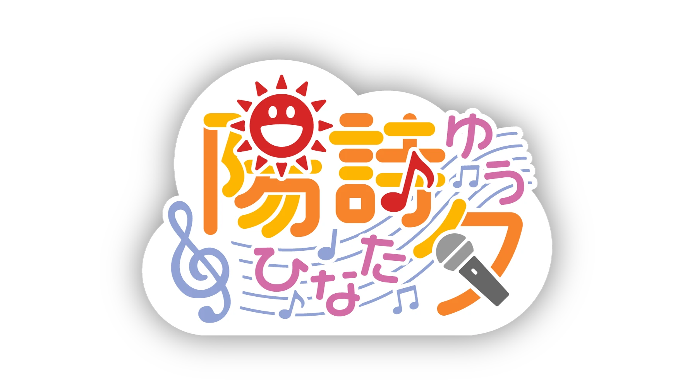

作曲・歌・MIX 全部やる
作詞作曲・歌ってみた・MIX・DTM講座まで自分でこなす、全部入りタイプ。 楽曲提供の実績もあり、創作の現場からそのまま発信しています。

ひなた ゆう
♪ 作詞作曲 / 歌ってみた / MIX / DTM講座
音楽を作り、歌い、しゃべり、ネタにして笑う。
青いパーカーの中から音符をぽんぽん取り出してくる、
育児パパ系17歳の音符VTuber。
About
作詞作曲・歌ってみた・MIX・DTM講座まで自分でこなす、全部入りタイプ。 楽曲提供の実績もあり、創作の現場からそのまま発信しています。
弱みもネタに変えて、最後は自分で拾って笑いに着地する距離の近さが魅力。 「セルフネガティブ自己紹介」Shortsが象徴する、笑える自己開示スタイル。
生活感とクリエイター感が同じテンションで同居する、ちょっとレアな人物。 「17歳」設定なのに育児パパという矛盾がキャラの核になっています。
ドラクエ3リメイクなど長尺ゲーム実況や、雑談ラジオスタイルの配信も展開。 音楽以外の顔も覗けるのがYouTubeチャンネルの面白いところです。
17LIVEとREALITYでもライブ配信を行っています。 リアルタイムのトークやリアクションは、ここでしか味わえないテンション感。
「セルフネガティブ自己紹介」シリーズをはじめ、クリエイターあるあるや DTMネタを短い動画に凝縮して定期投稿。隙間時間に追いやすいです。
Watch
6ヶ月ぶりの更新を「どうする陽詩夕！」という物語にしてしまう軽やかさ。 音楽制作・MIX・DTM講座・ゲーム実況・雑談ラジオまで、 ひとつのチャンネルに作家・配信者・生活者が全部入っています。
Profile
きれいに整えられたアイドル像より、制作机からそのまま配信へ来たような親しみやすさ。 音楽を作る手つきは真面目で、話し出すとテンションは高め。 うまくいかないことも、つい口に出して、最後には笑いに変える。
自虐もネタも、全部ひっくるめて「陽詩夕」です。